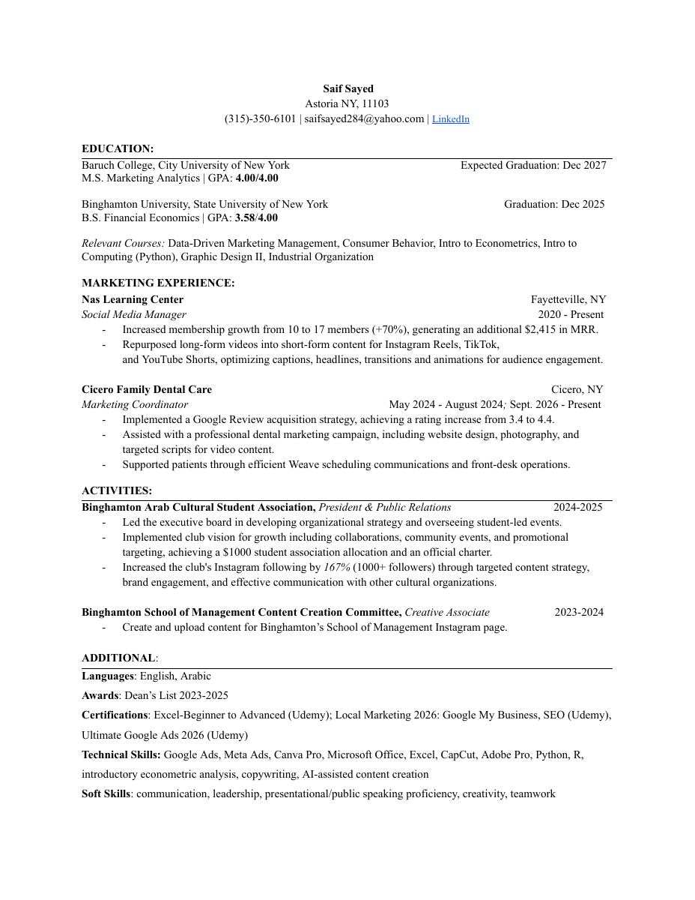

An Artistic Origin.
Childhood:
I had a passion for art early. Sketching, painting, and design were skills I cultivated. However, my creative side took a back seat for another interest of mine: Numbers.
Marketing Analytics Student. Artist. Leader.
A Financial Economics graduate with
a creative twist.
Childhood:
I had a passion for art early. Sketching, painting, and design were skills I cultivated. However, my creative side took a back seat for another interest of mine: Numbers.
Undergraduate:
As an economics student, I became frustrated with model limitations. I liked the quantitative rigor, but sensed slight deviations in model assumptions (mainly, rational agents) proved disastrous.
The Black Swan vindicated my feelings. I felt a drive to combine the practical economic skills I learned with the creative field of marketing.
Now:
Marketing is the field which allows me to use mathematics to create practical results while nurturing my creative spirit. I’ve worked with a local dental office, an e-learning company, and several undergraduate clubs to kickstart my journey.
Results in my Portfolio!
Open full CV ↗Targeted short-form content and YouTube development for a small e-learning company.
Contributed to membership growth from 10 to 17 through educational content for Instagram Reels, TikTok, and YouTube Shorts.
Local marketing, review acquisition, and digital presence for a dental practice in Cicero, New York.
Implemented a Google Review acquisition strategy and worked with a dental marketing agency on website development and photo/video content.
Social content strategy and branding campaigns at Binghamton University.
Supported an official charter and $1,000 allocation. School of Management campaigns contributed to a 50% increase in event attendance.
These are my favorite business / marketing books.